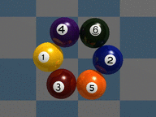

name:
Kengo Ichiki
![[portrait]](images/kengo-ichiki.jpg)
a former Research Associate
at
National Institute for Nanotechnology
(Theory&Modeling Group)
and
Mechanical Engineering,
University of Alberta
until January 2008.
currently, a Research Engineer
at d-Link in Kanazawa, Japan
email:
kengoichiki@gmail.com
twitter:
@kengoichiki

Dancing Particles in Shear Flow
![[fragmentation]](images/frag.gif)
Fragmentation of Charged Nanodroplet
![[mpeg movie of BUBBLING FLOW]](note/b266f3.gif)
![[mpeg movie of CHANNELING FLOW]](note/b266e3.gif)
Fluidized Beds
- CONTENTS
- INDEX on this page
<-- These are some of my simulation results
You can see more movies in
[test].
News!